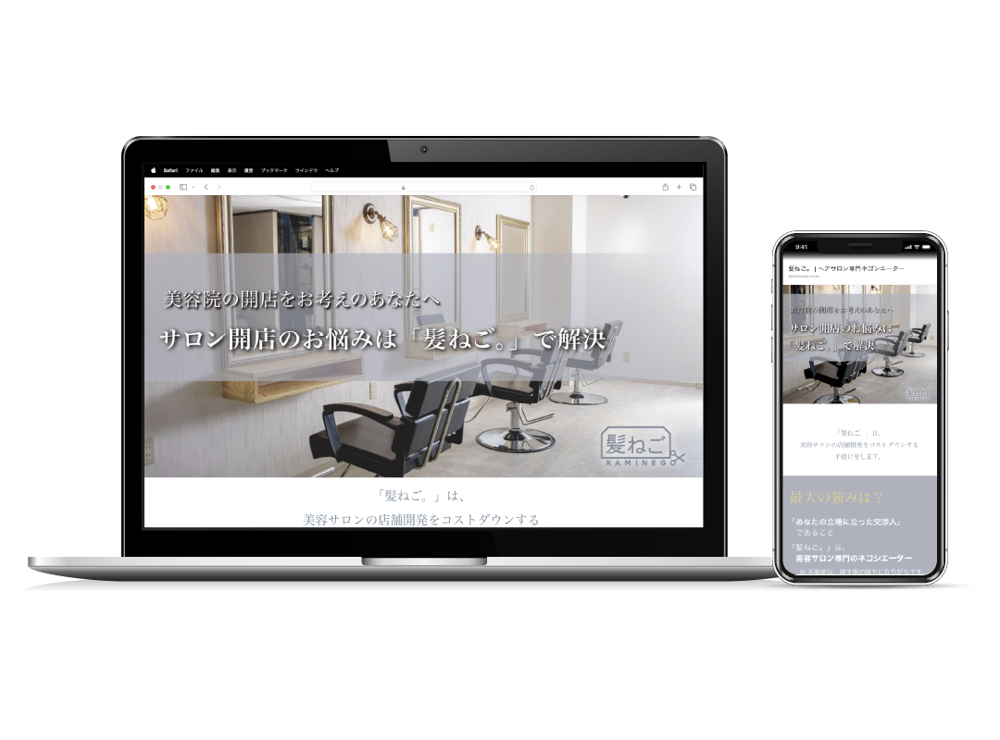
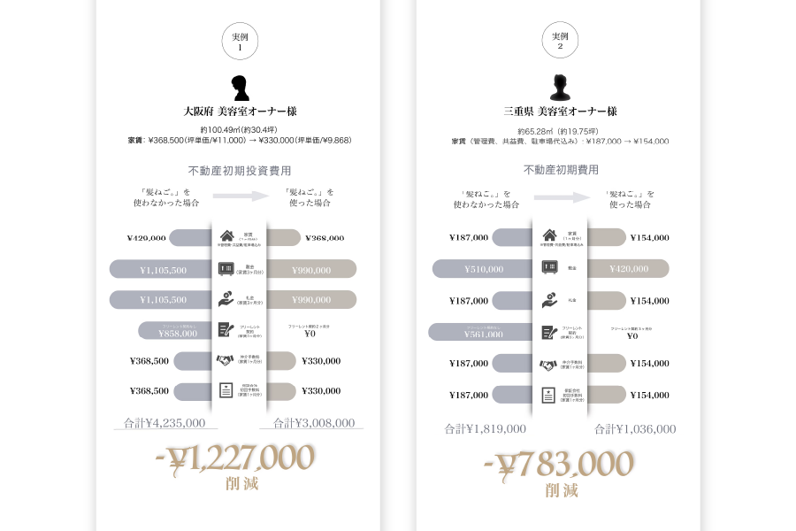
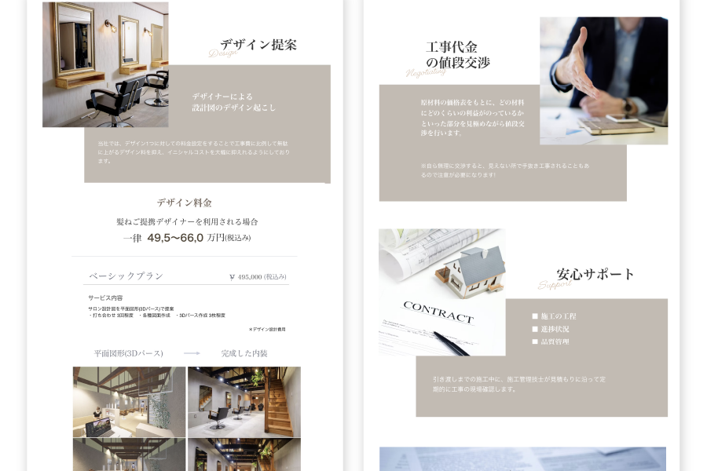
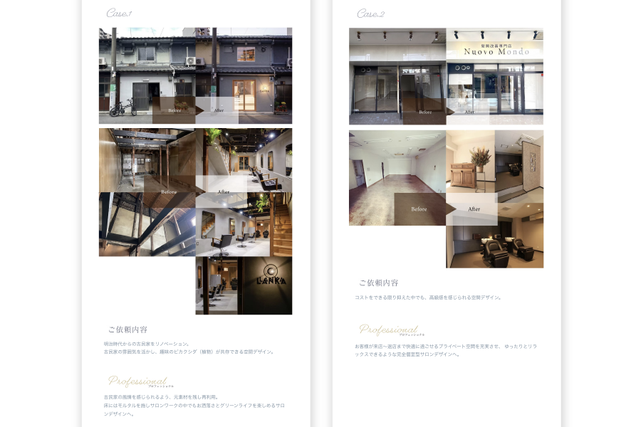

サロン向け開店支援事業（BtoB)｜WIXで制作

プロジェクト概要
BtoB集客に特化したLP × LINE活用で開業相談リードの獲得を目的としたプロジェクトです。
サロン開業を検討している美容師・オーナー向けに、開店支援サービスの魅力をわかりやすく伝えるBtoB向けランディングページを制作。
WIXを活用し、直感的な操作性とスムーズな問い合わせ導線を設計しました。さらに、LINE公式アカウントとの連携を前提とした導線配置を強化しました。
実施内容とポイント
1. ターゲットの課題を解決する情報設計
「開業に必要な準備がわからない」「資金調達や物件選びが不安」などの課題に寄り添うコンテンツ設計。LP冒頭で「サロン開業をスムーズに成功させるトータルサポート」を明示し、強みを訴求しました。
2. 問い合わせのハードルを下げる導線設計
LINEでの無料相談を導入し、気軽に問い合わせできる環境を構築。従来の問い合わせフォームよりCVR（コンバージョン率）が向上しました。スマホ最適化を徹底し、サロン開業を検討する美容師がストレスなく閲覧できるデザインを実現しています。
3. WIXの強みを活かした運用しやすい構築
企業側でブログや最新情報を簡単に更新できるシステム設計を行いました。また、SEO対策を施し、オーガニック流入の強化も実現しています。
デザインギャラリー

課題解決型の導入事例でベネフィットを強調

アクセントをつけたサービス紹介

視覚的に理解されやすい事例紹介を提示
制作コメント
このプロジェクトでは、BtoB向けの問い合わせ率向上を目的としたLP制作に加え、LINEを活用したリード獲得・育成を目指しました。
特に、サロン開業というハードルの高いテーマに対して、不安や疑問を解消するコンテンツを充実させ、LINE連携による気軽な相談導線を確保することで、従来よりもコンバージョン率を向上させることに成功しています。
また、WIXの管理画面をカスタマイズすることで、クライアント自身が簡単に情報を更新できる仕組みを構築し、運用面でも高い評価をいただきました。